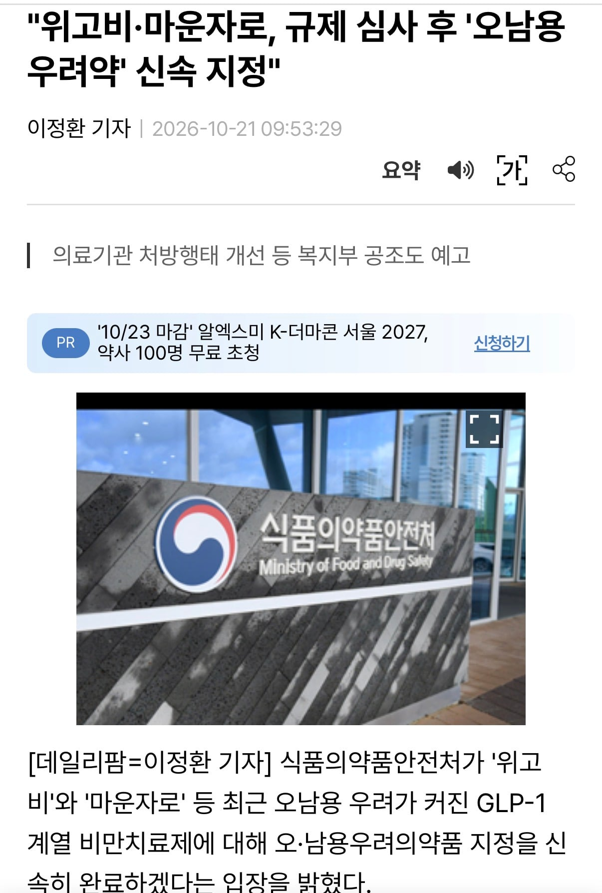
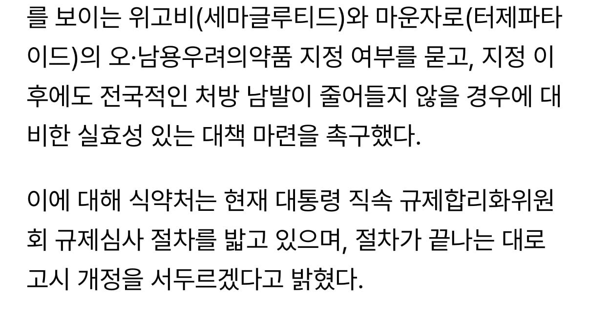

여태까지 에페 때문에 위고비랑 마운자로 오남용 의약품으로 지정하는거 피일차일 미뤄지고 있었음
그리고 드디어 식약처가 마운자로,위고비만 규제할수 있는 기적의 논리를 찾음
위고비랑 마운자로는 전국적으로 처방 남발(?)이 되고 있기 때문에 (당연히 에페는 출시도 안했기 때문에 처방 남발 안되고 있음)
위고비랑 마운자로만 오남용 우려약으로 신속 지정하고 규제를 시행하겠다고 함
대체 한미한테 얼마를 받아처먹은거냐고 ㅋㅋㅋㅋ

빨대의 크기를 키우고 좀 더 느긋하게 오래 빨겠다(다소의역)